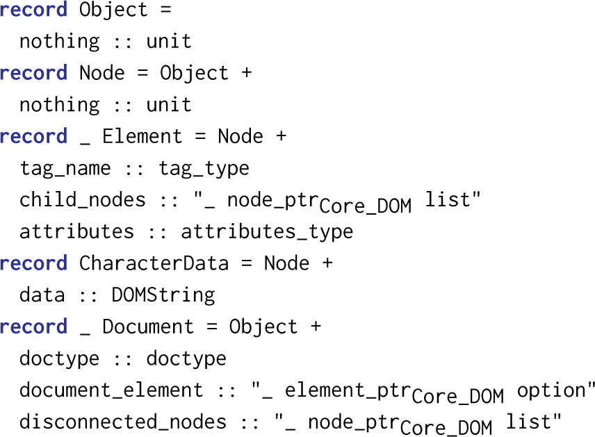

This is a HTML copy of https://doi.org/10.1145/3184558.3185980 originally published by ACM, redistributed under the terms of Creative Commons Attribution 4.0 (CC BY 4.0). The modifications from the original are solely to improve HTML accessability, compatibility, augmenting HTML metadata and avoiding ACM trademark. To reference this HTML version, use:
Permalink: https://w3id.org/oa/10.1145/3184558.3185980
DOI: https://doi.org/10.1145/3184558.3185980
WWW '18: Proceedings of The Web Conference 2018, Lyon,
France, April 2018
At its core, the Document Object Model (DOM) defines a tree-like data structure for representing documents in general and HTML documents in particular. It is the heart of any modern web browser.
Formalizing the key concepts of the DOM is a prerequisite for the formal reasoning over client-side JavaScript programs and for the analysis of security concepts in modern web browsers.
We present a formalization of the core DOM, with focus on the node-tree and the operations defined on node-trees, in Isabelle/HOL. We use the formalization to verify the functional correctness of the most important functions defined in the DOM standard. Moreover, our formalization is (1) extensible, i.e., can be extended without the need of re-proving already proven properties and (2) executable, i.e., we can generate executable code from our specification.
CCS Concepts: • Information systems → Markup languages; Document structure; • Software and its engineering → Software verification; Semantics; Formal software verification;
ACM Reference
Format:
Achim D. Brucker and Michael Herzberg. 2018. A Formal
Semantics of the Core DOM in Isabelle/HOL. In WWW '18
Companion: The 2018 Web Conference Companion,
April 23–27, 2018, Lyon, France. ACM, New
York, NY, USA 9 Pages. https://doi.org/10.1145/3184558.3185980
In a world in which more and more applications are offered as services on the internet, web browsers start to take on a similarly central role in our daily IT infrastructure as operating systems. Thus, web browsers should be developed as rigidly and formally as operating systems. While formal methods are a well-established technique in the development of operating systems (see, e. g., Klein [15] for an overview), there are few proposals for improving the development of web browsers using formal approaches [2, 9, 12, 17].
As a first step towards a verified client-side web application stack, we model and formally verify the Document Object Model (DOM) in Isabelle/HOL. The DOM [21, 23] is the central data structure of all modern web browsers. At its core, the Document Object Model (DOM) defines a tree-like data structure for representing documents in general and HTML documents in particular. Thus, the correctness of a DOM implementation is crucial for ensuring that a web browser displays web pages correctly. Moreover, the DOM is the core data structure underlying client-side JavaScript programs, i. e., client-side JavaScript programs are mostly programs that read, write, and update the DOM.
In more detail, we formalize the core DOM as a shallow embedding [14] in Isabelle/HOL. Our formalization is based on a typed data model for the node-tree, i. e., a data structure for representing XML-like documents in a tree structure. Furthermore, we formalize a typed heap for storing (partial) node-trees together with the necessary consistency constraints. Finally, we formalize the operations (as described in the DOM standard [23]) on this heap that allow manipulating node-trees.
Our machine-checked formalization of the DOM node tree [23] has the following desirable properties:
Finally, we show the correctness of the functions for manipulating the DOM w.r.t. the assumptions made in the standard.
After introducing Isabelle and higher-order logic in Sect. 2, we introduce the formal data model of the DOM and operations over the DOM in Sect. 3. In Sect. 4, we formalize the requirements for a valid heap, followed by the discussion of the verification of important properties of DOM operations in Sect. 5. Finally, we discuss related work (Sect. 6) and draw conclusions (Sect. 7).
In this section, we will outline the underlying logical and methodological framework of our formalization of the DOM node-tree.
Isabelle [16] is a generic theorem prover implemented in the functional programming language SML. Isabelle/HOL is the instance of Isabelle supporting Higher-order logic (HOL) [1, 8]. It supports conservativity checks of definitions, datatypes, primitive and well-founded recursion, and powerful generic proof engines based on rewriting and tableau provers.
HOL is a classical logic with equality enriched with total polymorphic higher-order functions. HOL is strongly typed, i.e., each expression e has a type 'a, written e::'a. In Isabelle, we denote type variables with a prime (e. g., 'a) instead of Greek letters (e. g., α) that are usually used in textbooks. The type constructor for the function space is written using infix notation: 'a $\Rightarrow$ 'b. HOL is centered around the extensional logical equality _ = _ with type 'a $\Rightarrow$ 'a $\Rightarrow$ bool, where bool is the fundamental logical type.
Functions in HOL are curried and pure, i.e., they take exactly one argument, return exactly one result, and cannot produce side-effects. To simulate functions with more than one argument, we let these functions again return a function, until it will finally return a non-function. Therefore, when reading curried function definitions, it can be helpful to interpret the chain of function definitions in the following way: the last type definition represents the “return value“ of the function, whereas the other types in the chain represent arguments to the function. When modeling stateful functions, such as in our case, we usually define functions that take an argument that represents the state and return an updated version (i.e., a map that contains an additional entry) that represents the state change.
The type discipline rules out paradoxes such as Russel's paradox in untyped set theory. Sets of type 'a Set can be defined isomorphic to functions of type 'a $\Rightarrow$ bool; the element-of-relation _ $\in$ _ has the type 'a $\Rightarrow$ 'a set $\Rightarrow$ bool and corresponds basically to the function application; the set comprehension {_ . _} (usually written $\lbrace \_\mid \_\rbrace$ in textbooks) has type 'a set $\Rightarrow$ ('a $\Rightarrow$ bool) $\Rightarrow$ 'a set and corresponds to the $\lambda$-abstraction.
Isabelle/HOL allows for defining abstract datatypes. For example, the following statement introduces the option type:
Besides the constructors None and Some, there is the match-operation case x of None $\Rightarrow$ F | Some a $\Rightarrow$ G a. The option type allows us to represent partial functions (often called maps) as total functions of type 'a $\Rightarrow$ 'b option. For this type, we introduce the short-hand 'a $\rightharpoonup$ 'b. We define dom f, called the domain of a partial function f, by the set of all arguments of f that do not yield None.
We also make use of the sum type, 'a + 'b, and the product type, 'a $\times$ 'b. With the sum type, it is possible to express tuples, which, for example, can be used to achieve a similar result to returning a tuple from a function. The product type represents either 'a or 'b, and is useful to model errors, as it allows to let functions return either some result on a successful calculation, or return an error.
When extending logics, two approaches can be distinguished: the axiomatic method on the one hand and conservative extensions on the other. Extending the HOL core via axioms, i.e., introducing new, unproven laws seems to be the easier approach but it usually leads easily to inconsistency; given the fact that in any major theorem proving system the core theories and libraries contain several thousand theorems and lemmas, the axiomatic approach is worthless in practice. In contrast, a conservative extension introduces new constants (via constant definitions) and types (type definitions) only via a particular schema of axioms; the (meta-level) proof that axioms of this schema preserve consistency can be found in [10].
We are now concerned with the question how a language is represented in a logic. Two techniques are distinguished: First, deep embeddings represent the abstract syntax as a datatype and define a semantic function I from syntax to semantics. Second, shallow embeddings define the semantics directly; each construct is represented by some function on a semantic domain.
Assume we want to embed a simple logical language BOOL, consisting of the two logical operators $\_ \operatorname{\mathsf {and}}\_$ and $\_ \operatorname{\mathsf {or}}\_$ , into HOL. The semantics I: expr → env → bool is a function that maps BOOL expressions and environments to bool, where environmentsenv = var → bool maps variables to bool values. Using a shallow embedding, we define directly:
In this section, we will present our formalization of the core DOM which follows the WHATWG specification [23], the updated version of the W3C DOM 4 standard [21]. This includes the definition of the tree-like data structure for representing documents and a set of functions for creating and modifying a document.
The main purpose of the DOM is to provide the data structure for managing tree-structured documents, e. g., following the HTML or XML standard. Fig. 1 illustrates a small example: Fig. 1a shows the textual representation of a simple document (using HTML as syntax), Fig. 1b shows the visualization of the DOM node-tree, and Fig. 1c shows the rendered output (e. g., in a web browser).
As the DOM models a tree-like data structure, it is not a surprise that the core datatypes of the DOM specifications are Document and the datatype Node with the two specializations Element and CharacterData. In our data model, we omitted attributes that can computed from others, e.g., the parent attribute which represent the inverse relation already represented by the childNodes and documentElement attributes.
While the core idea of formalizing object-oriented data models in an extensible way1 follows the construction presented in [3, 5], we differ significantly in aspects such as the modeling of typed pointers (references) and late binding of method invocations. Due to space constraints, we will not discuss this in this paper.
First, we start by defining abstract datatypes for typed pointers for the common super-class Object and the classes Node, Element, CharacterData, and Document:
The pointers to the abstract classes object_ptr and node_ptr only support a constructor for extensions; regular classes also have a constructor for the reference of the object itself. We use these datatypes to introduce type synonyms representing the actual pointer types for our DOM model (see Fig. 2).
The type polynomials are constructed in such a way that the HOL types for pointers of sub-classes in the object-oriented model are instances of the HOL type of their super-class. This is the key construction allowing an extensible formalization. For details, we are referring the reader to [5].
In the rest of this paper, we will use an underscore to denote the tuple of type variables of the type constructors for pointer and object types. For example, we will write _ node_ptrCore_DOM instead of
and assume that type variables of the same name are instantiated with the same types.
Second, we define HOL types representing objects using the record-package provided in Isabelle. Overall, we use the same construction of type polynomials to represent inheritance in HOL. Due to space reasons, we omit the technical details of the type construction. We refer interested readers to the Isabelle formalization [4]. For each class, we define one record:

Due to technical constraints of the record package, we need to introduce an attribute nothing for classes that do not define at least one attribute themselves. Given these definitions, we can, e.g., define a CharacterData object as follows:
Essentially, this models an object-oriented data model of a tree-like data structure, called node-tree in the DOM standard, where
Finally, we define a heap for storing node-trees, i.e., instances of our DOM data model. A DOM heap is a map from object pointers to objects:
Where _ ObjectCore_DOM is the type synonym for the instantiated super-type of object (similar to the construction for pointers).
Fig. 3 illustrates how the simple document from our example in Fig. 1 can be expressed in our formal DOM heap.
In the following, we will define the core DOM methods for creating, querying, and modifying the node-trees that are stored in a DOM heap. We define the following functions formally in Isabelle/HOL. Fig. 4 provides an overview of their formal type signatures.
All operations are defined over the DOM heap, i.e., they take a heap as input and return either an exception or a tuple containing the return value and a new heap:
All operations result in an exception if an argument is invalid, e. g., a pointer that does not represent a valid object in the current heap. We use a heap and error monad for modeling exceptions. This allows us to define composite methods similar to stateful programming in Haskell, but also to stay close to the official specification.
The function create_element takes an (owner)document and the tag name of the new element. It returns the updated heap that includes the new element with no children and no attributes along with a reference to the new element, which is stored in the first free location in the heap. This ensures that it will not change any existing locations in the heap, which we will prove later. Additionally, the new element is added to the list of disconnected nodes of the given document, as it is not yet part of the node tree.
The function get_child_nodes takes a heap and a pointer to a node and returns a list of pointers to its children. For elements, it returns the children list that is stored in the datatype. For text nodes, it returns the empty list. For documents, we convert their document element into the appropriate node list.
The function get_attribute looks up the given attribute in the element's attribute map. It returns Some attr if there exists an attribute with the given key, and None otherwise. The official specification also has a concept called “reflected content attribute,” which basically returns the stored attribute of the same name, but returns the empty string if the attribute is not present.
The function set_attribute updates the given attribute of the pointer in the heap. In the official specification, it is not allowed to set the attribute to None or null, respectively, to delete the attribute. We generalize this definition by allowing this.
The function get_parent_node takes a pointer to a node and returns a pointer to its parent, or None, if the node does not have a parent. The case where a node does not have a parent can only occur in disconnected node-trees, which we will discuss later. Our API does not accept documents, since they can never have a parent. Having the types as narrow as possible will enable easier proofs. The function get_parent_node is an example of a method where the official specification leaves much room for interpretation regarding the implementation. It neither provides an algorithm explaining to how obtain a parent, given a node, nor does it specify that the parent reference should be stored in the objects. To avoid specifying additional consistency constraints that would be needed if both children and parent references were to be stored, we implemented get_parent_node by searching the whole heap for any node whose get_child_nodes contains the given reference.
The function remove_child is rather close to the official specification; if child’s parent is different from the passed parent, then we “throw” a NotFoundError. Otherwise, we add the removed child to the disconnected node list of its owner document and remove it from either the document_element or the child_nodes attribute.
The function get_element_by_id searches in tree order (depth-first, left-to-right) for the first element with the given id. Our definition is more general than the official specification, as we dropped the requirement that get_element_by_id should only be available on documents, which is a legacy requirement.
3.2.1 Adopting Nodes. The method adopt_node removes a node from its previous parent, if it had any, and assigns it to the new ownerDocument. First, it tries to retrieve the parent of the node to be adopted. If the node has a parent node, it removes the node from the children list, otherwise it removes it from the list of disconnected nodes of the previous owner document. Finally, the node is now added to the disconnected nodes of the new document.
3.2.2 Inserting Nodes. Using insert_before, one can insert arbitrary nodes (i.e., not necessarily in the same node-tree) from the heap into a node-tree:
A node that should be inserted needs to fulfill certain well-formedness criteria. This is checked using the ensure_preinsertion_validity function which formalizes the concept of pre-insertion validity from the DOM standard. Then, the reference child needs to be determined, which is that node before which the to-be-inserted node should be placed. Then, we adopt the node into the (possibly new) node-tree and actually insert the node into either the child_nodes or document_element attributes.
Our DOM heap is a map from object pointer to object. While a map alone would allow numerous “illegal” heaps, two features of our formalization already rule out many misconfigurations: Our data model is typed and, thus, rules out illegal heaps such as one that contains a document that contains a character data object as its only child. Additionally, our data model omits some fields of the standard, such as parentNode, which we calculate by using the heap and get_child_nodes.
Still, some possible illegal heap configurations remain, such as one with a cyclic get_child_nodes relationship. Thus, we need further well-formedness constraints and we need to show that the DOM methods preserve the well-formedness. We will now introduce predicates that validate whether a given heap conforms to the standard.
The DOM specifications requires that each node is owned by exactly one document, its owner document. Moreover, each node participates in a tree w.r.t. the get_child_nodes-relation. A DOM might—and usually will—consist of several trees, i.e., a DOM is a forest of trees. We call the tree that has the main document as root the visible document, as this is the part of the DOM that would be rendered, e. g., by a web browser.
Fig. 5 illustrates this relationship for an example: the gray nodes (connected by solid arrows that visualize the get_child_nodes-relation) represent the visible document. The white nodes (connected by dotted arrows that visualize the get_owner_document relationship) are forming a temporary runtime tree. Runtime trees are not serialized (e. g., in an HTML or XML document) and only exist at runtime.
We define get_owner_document of a node to be the root, if the root is an document; otherwise, we return that document whose disconnected_nodes contains said node. In order for this definition to be well-formed, we need the following predicate:
This predicate guarantees us that the set of nodes in all disconnected_nodes fields is exactly the set of nodes that do not have a document as their root.
So far, we do not restrict the relation given by get_child_nodes to be acyclic, which is possible since we use pointers. To prevent this, we can use the following predicate:
We leverage the definition of acyclicity on relations, i.e., a set of tuples. Our relation contains all pointers parent and child where child is in the set of children of parent.
The DOM standard assumes that a node cannot be the child of more than one node. This property of heaps is informally implied by the official standard, and all tree-modifying methods ensure that such a DOM cannot be built. We, however, must deal with all heaps that conform to our heap type. Therefore, in addition to our heap predicate that guarantees us that all trees in our heap are acyclic, we need a predicate that prevents the nodes from having more than one parent. Therefore, we formally define another heap predicate:
The definition checks whether for any node, the set of possible parents (i.e., pointers whose children contains said node), contains exactly zero or one parents.
Moreover, we need to ensure that objects do not contain invalid pointers (e. g., pointers that do not point to an object stored in the heap of the same type). Otherwise, whenever we work with our pointers, we would have to deal with the possibility of a “null-pointer exception”. Thus, we require:
The only place where we can find pointers (without arbitrarily constructing them, which should be avoided) is in one of the datatype fields. Therefore, for all pointers in the heap, we retrieve the corresponding object, and check whether all pointers stored in applicable fields (childNodes, document_element, and disconnected_nodes) are present in the heap.
As we model typed pointers and objects, we want to assure that a pointer of a certain type actually maps to an object of the related type in a given heap, e. g., that a document_ptr actually maps to a document. The following predicate assures us that this holds for the whole heap:
Similarly to document, the definition also contains checks for the other classes, which we omitted here due to space constraints. The definition checks whether for all, e.g., document pointers, the heap actually returns and object for which is_document_kind holds.
The childNodes and disconnected_nodes attributes are of type list. Thus, they may contain duplicates, i.e., the same pointer multiple times. This can lead to strange effects, such as that after remove_child has been called, the pointer still is in the list. This behavior is not addressed by the official specification. We make this requirement explicit:
We retrieve the lists for every pointer in the heap and require that they are distinct. In Sect. 5.2, we will show a formal proof of the fact that insert_node actually can never lead to a childNodes list with duplicates.
To put it all together, we define a well-formed heap as a heap that satisfies all discussed constraints:
So far we only defined the DOM data structure, a heap for storing DOM instances, and methods over them. We now discuss the verification of these methods in the sense of formally proving that they preserve the well-formedness of the heap.
5.1.1 Well-formedness of the Heap Methods. The DOM methods (see Sect. 3.2 and Table 1) can be divided into two categories: All query functions (starting with the prefix get_) use the heap to compute a value, but do not modify the heap. It is therefore easy to show that they preserve the well-formedness of the heap. For all other function, we have to formally prove their correctness w.r.t. preserving the well-formedness of the heap. If all methods preserve the well-formedness then we have shown that any exception-free sequence of DOM methods creates a well-formed DOM heap.
| side-effect | modifies | preserves | |
| free | only | well-formedness | |
| 2-4 get_child_nodes | $\checkmark$ | ||
| get_parent_node | $\checkmark$ | ||
| get_element_by_id | $\checkmark$ | ||
| get_attribute | $\checkmark$ | ||
| create_element | $\checkmark$ | $\checkmark$ | |
| set_attribute | $\checkmark$ | $\checkmark$ | |
| remove_child | $\checkmark$ | $\checkmark$ | |
| adopt_node | $\checkmark$ | $\checkmark$ | |
| insert_before | $\checkmark$ | $\checkmark$ |
For all methods, we need to prove a lemma of this form:
All variables in lemmas are all-quantified, meaning they can take all possible values of the corresponding type, only restricted by the statements in the assumption. As the predicate heap_is_wellformed is a conjunction of more specific predicates (e. g., acyclic_heap), we can split the proof for these lemmas into separate proofs that the methods are preserving those more specific conditions. We will discuss such a proof in more detail at the end of this section. Due to space limitations we will omit most proofs, for which we refer the reader to our full formalization.
5.1.2 Heap Modifications are Local. We want to ensure that heap-modifying functions do not modify the heap arbitrarily. Thus, we first introduce two predicates that characterize a function by specifying which locations (pointers) and fields are being read or written, respectively:
Both predicates take a set of pointers and predicates that assert something about the specified heap location in both the old and new heap. This will be, for example, a predicate checking whether the attributes field of Element will have the same value in both heaps. The writes predicate is characterized by these getter predicates that remain unaffected, which is why it references a set Sg, which contains all such getter predicates for the getters of our classes. For example, for the get_attribute and set_attribute DOM methods we prove the following:
5.1.3 Exceptions. All our functions can throw exceptions, i. e., they return a sum type of exception and their real return type, which is a common way to model exceptions in functional languages. Therefore, we can provide lemmas that show under which preconditions our functions will return their normal result and not throw an exception. Most functions will throw an exception under exactly one circumstance: if they try to resolve a pointer on the given heap, but the heap does not have an object of the same type stored in that location, i. e., the lookup returns None. This is not surprising, since most functions will need to do something with the object, and not just the pointer to the object. For example, we show:
Our DOM model allows us to prove properties of our specified DOM methods over arbitrary heaps. In proofs, the general line of arguing will usually utilize the fact that heap-modifying methods consist of a series of heap updates in single locations, whose proven properties we can utilize. We will show one example of such a proof to demonstrate how one can work with the formalization.
For example, we can prove that using insert_before does certainly never lead to duplicates in the node's children list, even if a pointer is being inserted that is already in this node's children. We express this property in our formalization as follows:
We first assume that we start with a wellformed heap. The next two assumptions guarantee us that ptr and the parent, if any, of new_child are of a known type — so either a element_ptr, character_data_ptr, or document_ptr. These two assumptions are necessary to prove something about one of our late-bound functions, get_child_nodes and set_child_nodes, later. The last assumption introduces h2 as the heap after an application of insert_before.
The conclusion is to be read as follows: After the use of insert_before (h2), all lists of children of all known pointers will be distinct. Fig. 9 shows a formal proof sketch (i.e., a simplified excerpt of a formal proof using Isabelle's proof language Isar [22]).
5.2.1 Proof Structure. Recall the definition of insert_before in Sect. 3.2, which consists of two heap-modifying functions: adopt_node, which removes the new child from its old parent and updates the owner document, and insert_node, which appends the new child to the actual children list. The proof is therefore structured as follows:
First, we unroll the definition of insert_before to get a handle to the individual statements. Additionally, we obtain h', which is the intermediate heap in between adopt_node and insert_node.
Second, we prove that after adopt_node, in addition to all children lists still being distinct (we only remove one child from one list), the child will not be part of any of these (as it has been removed from the only children list that contained it). For this proof, we can use two properties of adopt_node that we proved earlier, adopt_node_removes_child (Fig. 6) and adopt_node_children_remain_distinct (Fig. 7).
Third, since we know that before the use of insert_node all children lists are distinct and do not contain the node that is to be inserted, we can prove that all children list will remain distinct, as we only insert the given node and nothing else. Again, for this proof, we can use a property that we have already proven about insert_node, insert_node_children_remain_distinct (Fig. 8).
To our knowledge, there are only very few formalizations of data structures for manipulating XML-like document structures available. Sternagel and Thiemann [19] present an “XML library” for Isabelle/HOL. The purpose of this library is to provide XML parsing and pretty printing facilities for Isabelle. As such, it is not a formalization of XML or XML-like data structures in Isabelle/HOL.
Our DOM typed formalization shares several design decision with the type-safe DOM API of Thiemann [20]. The most closely related works are [9, 17, 18] in which the authors present a non-executable, non-extensible, and non-mechanized operational semantics of a minimal DOM and show how this semantics can be used for Hoare-style reasoning for analyzing heaps of DOMs. The authors focus on providing a formal foundation for reasoning over client-side JavaScript programs that modify the DOM.
A more informal model of the DOM that focuses on the needs of building a static analysis tool for client-side JavaScript programs is presented by Jensen et al. [13]. This model does not focus on the DOM as such, instead the authors focus on the representation of HTML documents on top of the DOM.
Finally, there are several works, e. g., [2, 11, 12] on formalizing parts of web browsers for analyzing their security. These works use high-level specifications of web browsers and do not contain a formalization of the DOM itself.
We presented a typed formalization of the Document Object Model (DOM) in Isabelle/HOL. Technically, our formalization is an executable shallow embedding of the official specification of the WHATWG [23] and the W3C.
We see several lines of future work. We consider tightening the link between the formal specification and the actual implementations used by various web browsers as the most important line of future work. One promising approach to achieve this goal is the systematic generation of test cases from the formal specification using test case generation techniques hat are integrated into Isabelle/HOL [6, 7]. The generated test cases can, as the already existing manually developed test cases, be used for validating the compliance of actual browser implementation.
Furthermore, there are two promising areas w.r.t. extending the scope of our formalization: first, formalizing and analyzing the “DOM with Shadow Roots,” i. e., the new component model proposed as part of the DOM standard of the WHATWG [23]. Second, using the extensibility of our formalization to add support for HTMLElement (and its sub-types such as HTMLIFrameElement). As the concept of iframes is fundamental for restricting information flow between parts of a website originating from different security domains, such a formalization would allow us to reason over web security properties in Isabelle/HOL.
The formalization is available under a 2-clause BSD license in the Archive of Formal Proofs [4]. A copy is also available at https://git.logicalhacking.com/afp-mirror/Core_DOM.
1This object-oriented form of extensibility allows us, e.g., to later extend the DOM model to a formal model of standards based on the DOM standard, such as HTML, without the need to re-prove properties over the DOM.
This paper is published under the Creative Commons Attribution 4.0 International (CC-BY 4.0) license. Authors reserve their rights to disseminate the work on their personal and corporate Web sites with the appropriate attribution.
WWW '18 Companion, April 23-27, 2018, Lyon, France
© 2018; IW3C2 (International World Wide Web Conference
Committee), published under Creative Commons CC-BY 4.0
License.
ACM ISBN 978-1-4503-5640-4/18/04.
DOI: https://doi.org/10.1145/3184558.3185980